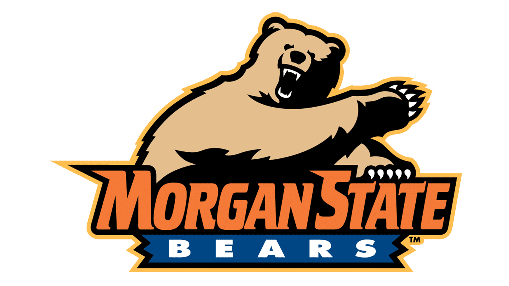

A Bear's Guide to
History · Mission · Traditions · Resources

"Morgan State University is the premier public urban research university in Maryland, known for its excellence in teaching, intensive research, effective public service and community engagement. Morgan prepares diverse and competitive graduates for success in a global, interdependent society."
— Morgan State University, Mission & Values
"Morgan State University serves the community, region, state, nation, and world as an intellectual and creative resource by supporting, empowering and preparing high-quality, diverse graduates to lead the world. The University offers innovative, inclusive, and distinctive educational experiences to a broad cross section of the population in a comprehensive range of disciplines at the baccalaureate, master's, doctoral, and professional degree levels. Through collaborative pursuits, scholarly research, creative endeavors, and dedicated public service, the University gives significant priority to addressing societal problems, particularly those prevalent in urban communities."
— Morgan State University, Mission & Values
Morgan State University is regionally accredited by the Middle States Commission on Higher Education (MSCHE), an accrediting body recognized by the U.S. Secretary of Education and CHEA. Morgan has been an accredited member since January 1, 1925.
Morgan is governed by the Board of Regents and led by President David Wilson. Major divisions include Academic Affairs, Enrollment Management & Student Success, Finance & Administration, Institutional Advancement, International Affairs, Research & Economic Development, and Student Affairs.
Morgan is a major economic engine for Baltimore and Maryland, producing $1.5 billion in statewide economic impact, supporting more than 8,200 jobs, and generating over $71 million in state tax revenue each year.
Statewide Economic Impact
Jobs Supported
State Tax Revenue
MSCHE Accreditation Since
From a small church school in 1864 to a Carnegie Doctoral Research University — explore every chapter of Morgan's 160-year legacy. Click any event to expand its full story.
Founded by the Baltimore Conference of the Methodist Episcopal Church to train African American men for ministry. Located initially in downtown Baltimore, the institute represented a crucial educational lifeline during Reconstruction.
Renamed in honor of Reverend Lyttleton F. Morgan, the first chairman of the Board of Trustees, who donated land and funding. The college expanded its mission to include liberal arts education for both men and women.
Morgan relocated to its current 143-acre campus in northeast Baltimore, purchasing the Ivy Mill property. The new campus provided space for growth and positioned Morgan as a leading institution in the region.
The State of Maryland acquired Morgan College, making it a public institution. This transition dramatically increased funding and enrollment capacity, opening the doors wider to Black Marylanders seeking higher education during the Jim Crow era.
Morgan students, known as the "Morgan Four," staged some of the nation's earliest lunch counter sit-ins at Read's Drug Store in Baltimore — five years before the Greensboro sit-ins gained national attention. Morgan has always stood at the forefront of social justice.
The Maryland legislature elevated Morgan to university status, reflecting its expanded graduate programs and research mission. Morgan State University was born, signaling a new era of doctoral education.
Morgan earned Carnegie Classification as a Doctoral Research University, one of only a handful of HBCUs to achieve this distinction. Today, MSU ranks among the nation's leading HBCUs in research expenditures, with programs in engineering, architecture, public health, and more.
Traditions connect generations of Bears and make the Morgan experience unforgettable.
Tens of thousands of students and alumni return to Baltimore every fall for Homecoming — one of the most celebrated HBCU traditions on the East Coast. The 2025 weekend opened with a concert at Hill Field House headlined by Mariah the Scientist and NoCap, followed by a homecoming parade, tailgating, and a Bears victory (44–7 over Virginia University of Lynchburg).
Morgan's legendary marching band is renowned nationally for its high-energy performances, precision drill, and show-stopping halftime routines. The band leads the annual Homecoming parade and electrifies every home football game at Hughes Stadium.
An annual celebration honoring Morgan's 1867 founding. President David K. Wilson leads the campus community in tribute to the university's legacy. Freshmen and sophomores are required to attend; all faculty wear academic regalia. The 2025 keynote was delivered by alumnus Dr. Calvin B. Ball III (Class of 2008), Howard County Executive.
The Bears and Lady Bears compete across 13 varsity sports in the Mid-Eastern Athletic Conference (MEAC), NCAA Division I FCS. Mascot: Benny the Bear. Colors: Blue & Orange. Home football games are held at Hughes Stadium; basketball at Talmadge L. Hill Field House. Morgan leads the all-time football series against rival Howard University (43–29–1).
The Bears are rallied by two fight songs performed by the Magnificent Marching Machine and the crowd at every game:
Sung at the close of all-campus Commencement ceremonies in May and December. By tradition, all students stand and men bare their heads during the singing. Written by Flora E. Strout.
Fair Morgan, we love thee, so tried and so true,
Our hearts at thy name thrill with pride;
We owe thee allegiance, we pledge thee our faith,
A faith which shall ever abide.
Commencement is Morgan's most solemn and celebratory tradition — steeped in centuries-old academic customs, ceremonial insignia, and the recognition of distinguished achievement.
Bestowed upon each President at inauguration and worn at every Commencement and official occasion requiring academic regalia. Cast in bronze with an antique patina, its 1½-inch medallions bear the names of all presidents and the four institutional periods: Centenary Biblical Institute, Morgan College, Morgan State College, and Morgan State University. The 3-inch Presidential Medallion at the bottom is embossed in bas-relief with the Seal of the University.
Designed for Morgan's 10th inaugurated president, Dr. David Wilson, in 2010. Donated by Dr. Clara I. Adams (Class of 1954) and Mr. Wilbert L. Walker (Class of 1950). Crafted by the Medallic Art Company, Dayton, NV.
Originally a medieval weapon, the mace became a symbol of academic authority borne by the Chief Faculty Marshal in every academic procession. Morgan's mace tradition dates to 1956.
Made of wood from one of the oldest campus buildings, a polished campus-quarry stone, and three silver strips engraved with epochs of Morgan's history. A gift from the General Alumni Association (June 4, 1956). Designed by Dr. Charles W. Stallings, MSC Department of Art.
A 36-inch fluted mahogany staff with 14 antique brass banners — the first 10 engraved with inaugurated presidents. The four-sided mahogany crown bears three iconic campus structures and the university seal. A Sesquicentennial gift from the MSU Alumni Association.
A 54-inch fluted mahogany staff with 10 brass banners and a 3-inch bronze Sesquicentennial medallion atop a mahogany crown. After the celebration, retired to display in Richardson Library, then permanently archived in the Beulah Davis Special Collections Room.
Chief Faculty Marshals:
Dr. M. L. Calloway (1914–48) · Dr. G. H. Spaulding (1948–66) · Dr. N. K. Proctor (1966–74) · Dr. C. C. Stansbury (1974–2009) · Dr. M. A. Jeremiah (2009–present)
The traditional black cap and gown dates to medieval monastic orders; a uniform code was adopted in 1893. Each degree level has its own gown and hood. The hood's field color identifies the discipline; its silk lining shows the colors of the degree-granting institution. The doctoral tassel is gold.
† Commencement Speaker · * Convocation Speaker
These official institutional values guide student learning and success, faculty scholarship and research, and Morgan's engagement with the broader community.
Morgan provides rigorous academic curricula and challenging co-curricular opportunities that promote leadership development among students, faculty, and staff.
Morgan encourages all forms of scholarship, including the discovery and application of knowledge in teaching, learning, and the creation of innovative products and processes.
Honest communication, ethical behavior, and accountability for words and deeds are expected from every member of the Morgan community.
A broad diversity of people and ideas is welcomed and supported at Morgan as essential to quality education in a global, interdependent society.
Excellence in teaching, research, scholarship, creative endeavors, student services, and university operations is continuously pursued to ensure effectiveness and efficiency.
Each person at Morgan is to be treated with dignity, equity, and respect in every situation across campus life and university operations.
Morgan State University Mission & Values — morgan.edu/about/mission-and-values
Morgan invests in the whole student — intellectually, emotionally, professionally, and financially.
In-person and online tutoring conducted by CRLA Level I Certified Tutors. Schedule through EAB Navigate or by email.
Individual and group tutoring, living and learning communities, and academic development opportunities for all students.
Supports students in developing effective writing skills across all disciplines — from freshman essays to graduate theses. In-person and online tutorials available.
Around-the-clock online tutoring accessible directly through Canvas. Covers a wide range of subjects plus an online writing center — available any time, any day.
Designed for students eligible for dismissal or suspension. AIM engages and rehabilitates students — promoting academic success and holistic wellness — to help them return to good academic standing and continue their journey at Morgan.
Engages sophomore students in experiential learning beyond the classroom — internships, job shadowing, campus-to-career field trips, and study abroad programs — building the soft skills employers value most.
The library houses over 300,000 volumes, a vast suite of research databases, computer labs, study spaces, and the Innovation Hub. Librarians offer one-on-one research consultations, instruction sessions, and subject-specific research guides.
Today's Hours
SDSS is dedicated to helping students with disabilities accomplish their scholastic and career goals by supporting academic and advocacy skills and eliminating physical, technical, and attitudinal barriers. All services operate in accordance with the ADA of 1990 and Section 504 of the Rehabilitation Act of 1973.
If you or someone you know is in crisis, help is available right now:
Free individual therapy, group counseling, crisis intervention, and psychiatric services for enrolled students. All sessions are strictly confidential.
The Health & Wellness Center offers mindfulness workshops, stress management programs, health education, and referrals to community mental health providers.
Trained peer educators and mentors provide informal support, active listening, and resource referrals from a student perspective. No appointment needed to reach out.
HANDSHAKE is your gateway to career opportunities. Students and alumni can discover jobs and internships, while employers connect with top Morgan talent. Create your profile early — employers actively recruit Bears!
Get personalized career guidance on choosing majors, finding internships, navigating job searches, applying to graduate school, and preparing for interviews. One-on-one advising is available for all students.
Explore diverse internship opportunities to gain practical experience, build professional networks, and enhance career prospects. Opportunities span many fields including paid, remote, and summer internships.
A supportive community for Morgan students who are the first in their families to pursue a college degree. First-Gen Bears is designed to empower, connect, and support first-generation students every step of their journey — including career readiness.
Stand out to top employers like Goldman Sachs, lululemon, and PepsiCo. Forage offers FREE day-in-the-life virtual job simulations — get hands-on experience and earn certificates that make your résumé shine.
The CCD offers flexible options for employers and faculty to engage Morgan talent. Services include on-campus recruiting via Handshake, a Sponsorship Program, Career Closet, and a Career Services Photo Booth. Faculty can request tailored career workshops with two weeks' advance notice.
The Office builds a lifelong, mutually-beneficial relationship between Morgan and its alumni — encouraging involvement in volunteerism, programs, and financial support to keep the university strong. Morgan's 50,000+ alumni network spans every industry, facilitating mentoring, networking events, and job referrals for current students and graduates.
Contact Information
Morgan Bears continue to make headlines and impact communities across every field. Recent alumni spotlights:
The office assists with all types of financial aid — grants, scholarships, loans, and work-study. 2026 Summer Aid Application is now available! Students can also explore scholarships through ScholarshipUniverse.
The FWSP provides on- and off-campus job opportunities for currently enrolled students. Positions must reinforce the student's educational or vocational goals. The office acts as a referral service advertising both federal and non-federal jobs.
Morgan awards millions in institutional scholarships annually. Merit-based, need-based, departmental, and external scholarships are available. Students should apply every academic year and use ScholarshipUniverse to discover additional funding.
Federal and state grants (including Pell and SEOG) do not need to be repaid. Federal loans provide low-interest borrowing options. The Financial Aid office helps students understand all available aid types and eligibility requirements.
Morgan's Emergency Aid Fund provides one-time grants to students facing unexpected financial hardship. The Bear Necessities Food Pantry ensures no Bear goes hungry. No student should suffer in silence — these resources exist for you.
This guide draws from a variety of credible, primary, and secondary sources, including institutional websites, peer-reviewed publications, and historical records.